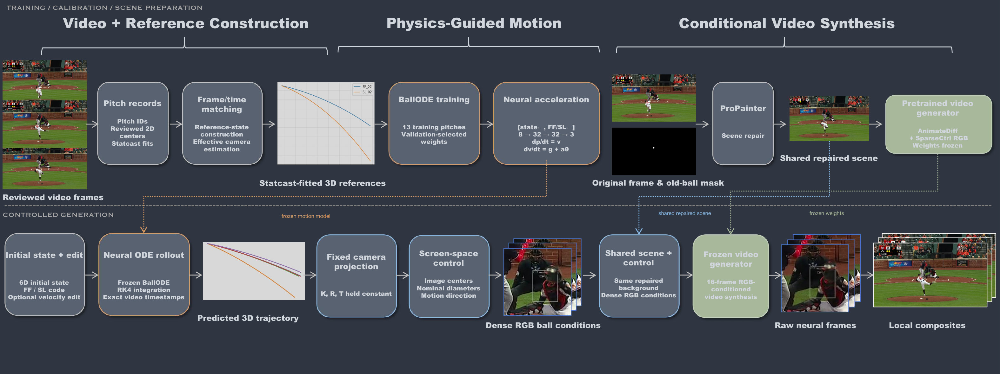
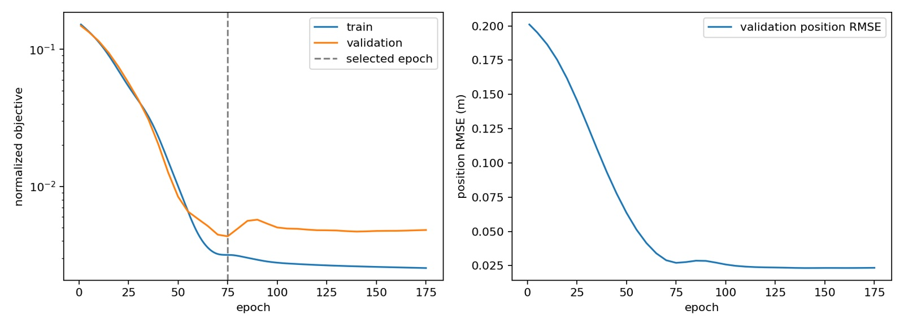
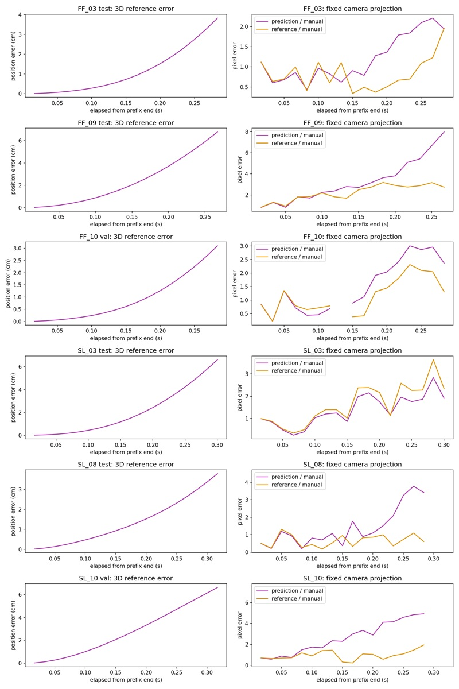
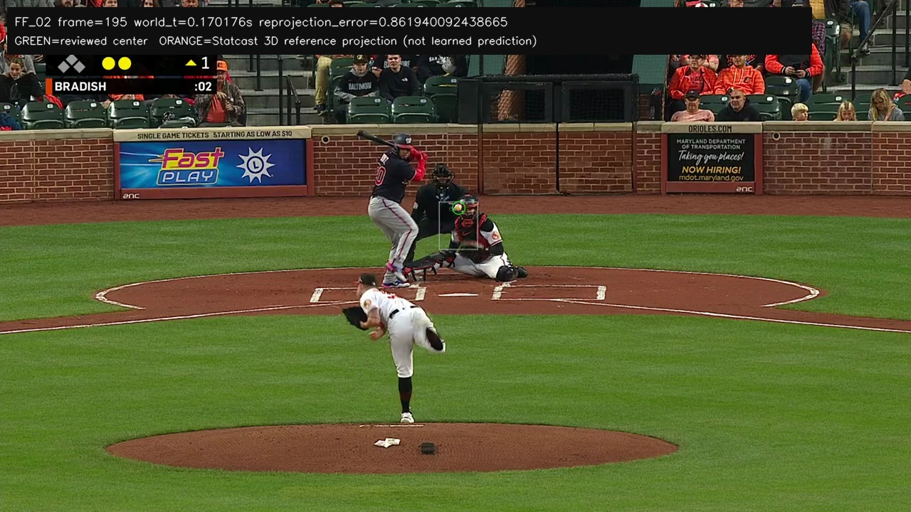
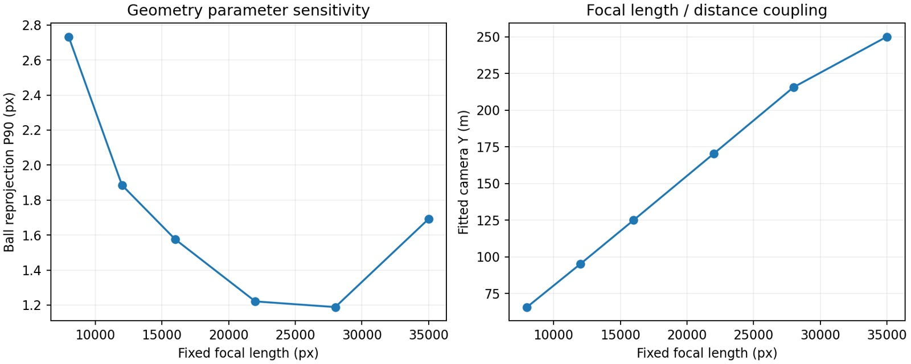
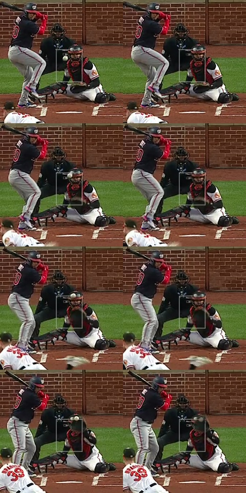
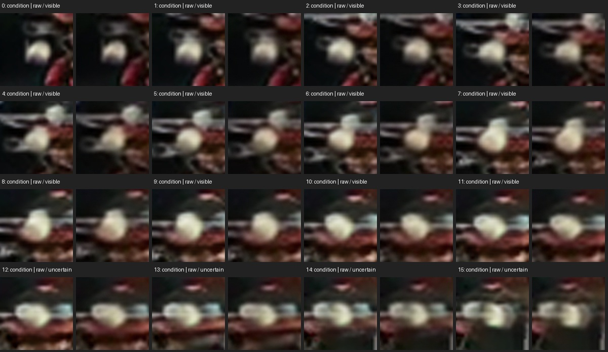
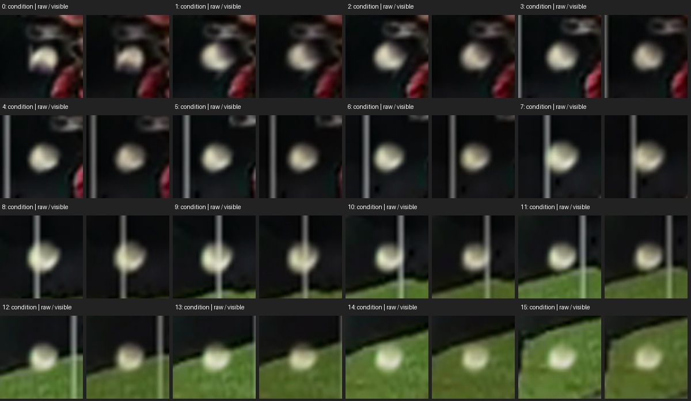
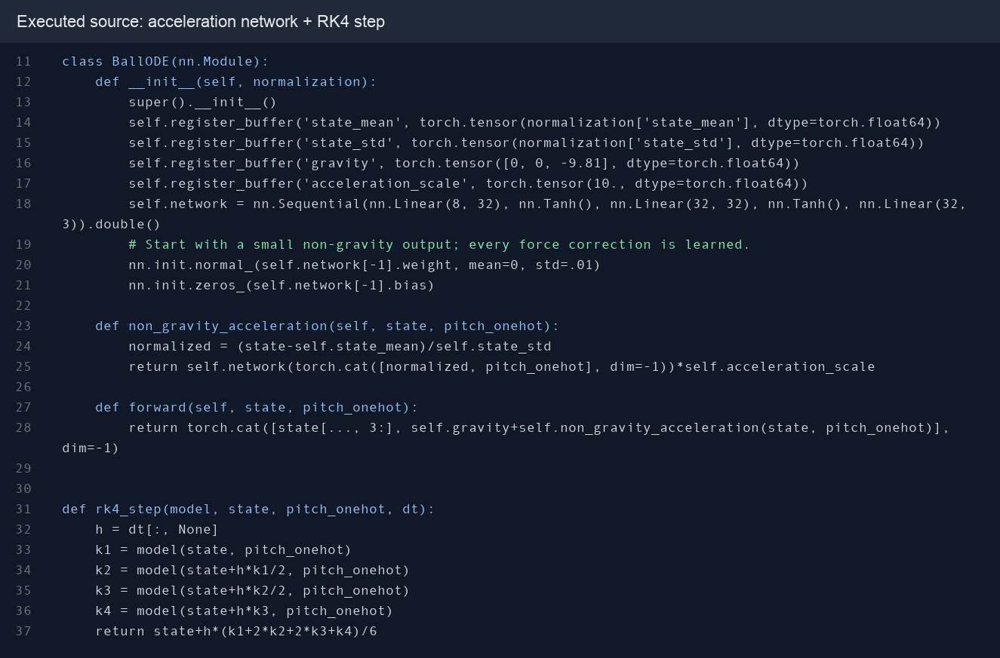
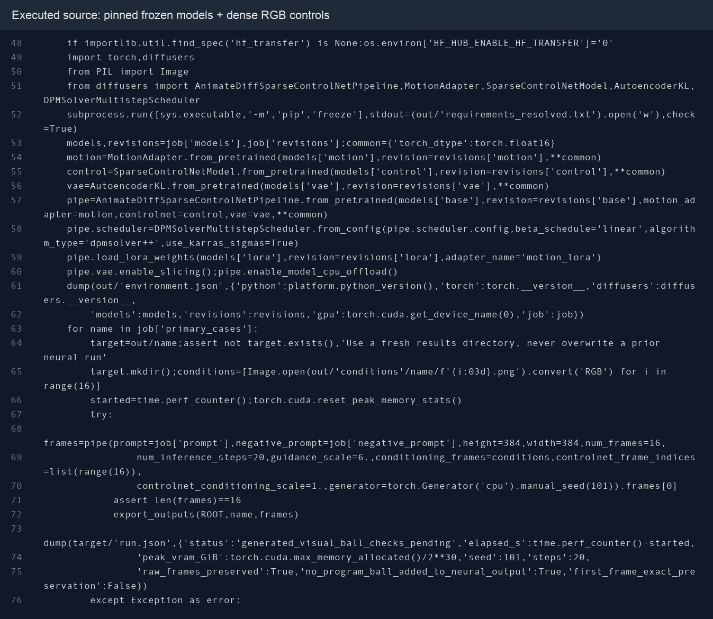

FF conditionFour-seam fastball input
01 / WATCH
Two pitch conditions, one scene
FF and SL conditions share the same initial position and camera. Compare the final composite with the raw neural output.
SL conditionSlider velocity + type input
16 frames · 0.250 s from first to last frame · 5× slow playback without interpolation. The SL condition changes both initial velocity and pitch type.
Generated pixels are blended through a softened trajectory mask onto a ProPainter-repaired background. The close-up crops this final composite; raw output shows the uncomposited generation. Ball visibility: SL 16/16 frames; FF 12/16, with late helmet fusion. Generated-center accuracy has not been measured.
02 / APPROACH
Model architecture

03 / EXPERIMENT
Experimental results
19Active pitches · 9 FF / 10 SL
497Reviewed centers · 10 missing
13 / 2 / 4Train / validation / test pitches
1,443Trainable ODE parameters
507 frames: 497 reviewed centers and 10 missing observations. Active subset: 19 pitches from a 30-pitch collection.
Reference & camera
Statcast-fitted 3D states + reviewed 2D centers; estimated effective camera held fixed. Initial states and timing use whole-pitch reference information.
Training setup
6D state + FF/SL code → 32 → 32 → 3 acceleration; explicit gravity. RK4 ≤ 1/240 s; Adam 0.001; seed 101; train-only normalization; validation-selected checkpoint.
Held-out state position RMSE0.0248 m
Projected-center median error1.28 px
Projected-center P90 error3.66 px
State RMSE: fitted Statcast reference. Projection errors: 69 held-out future centers; P90 is the 90th-percentile pixel error. Reference projection: median 1.09 px / P90 2.73 px. These measure trajectory projection, not generated-video accuracy.


Inspect the camera fit and its ambiguity


04 / CONTROL
Change the input, inspect the projection
These curves are the actual stage-4 image trajectories under the same learned model and camera. They are predicted paths, not measured centers of generated balls.
The starting state is the first visible flight frame, not the release instant. World +x projects leftward in this camera; world and image directions should not be conflated.
FF baseline Edited input
05 / VISUAL EVIDENCE
Look beyond the final composite
Condition frames are guidance, not successful neural outputs by definition. The recorded comparisons below retain difficult frames.



Implementation snapshots


Video synthesis: AnimateDiff with RGB SparseCtrl, 384 × 384, 16 conditioning frames, 20 steps, seed 101. ProPainter supplies the shared repaired background. Source and dependency details are recorded in the report.
06 / NEXT
What this pilot leaves open
Current limits
- Small, fixed-scene sample; no demonstrated generalization to new cameras or sessions.
- Reference-assisted initial states and uncertain camera parameters.
- Very short video horizon, uncertain late FF frames, and no generated-center error metric.
- Empirical ball appearance and blur; no reconstructed spin, exposure, or physical occlusion.
Next experiments
- Estimate initial state from a video prefix and quantify camera uncertainty.
- Hold out recording sessions and compare with analytic trajectory baselines.
- Vary velocity and pitch type separately; measure the generated ball centers.
- Improve apparent diameter, motion blur and occlusion before extending the video horizon.
The outcome is an inspectable end-to-end prototype and a set of concrete research questions—not a validated general-purpose simulator.